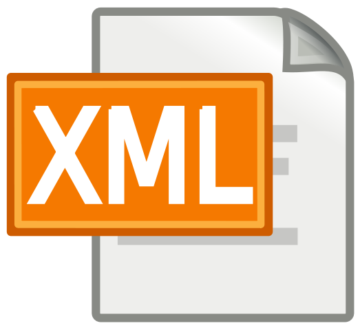

HTML

HTML es un lenguaje de marcado que nos permite indicar la estructura de nuestro documento mediante etiquetas. Este lenguaje nos ofrece una gran adaptabilidad, una estructuración lógica y es fácil de interpretar tanto por humanos como por máquinas.
Información extraida de aquí.
CSS

- Complementariedad con documentos estructurados.
- Independencia del vendedor, la plataforma y el dispositivo.
- Mantenibilidad.
- Simplicidad.
- Rendimiento de la red.
- Flexibilidad.
- Riqueza.
- Combinación con lenguajes alternativos.
- Accesibilidad.
Información extraida de aquí.
XHTML
XHTML se utiliza para marcar contenido como texto, imágenes y enlaces en forma de hipervínculos para crear una cierta estructura que puede ser mostrada por los navegadores. Los documentos pueden ser estructurados con XHTML para hacerlos legibles para un analizador. El analizador interpreta los elementos de marcado especificados en las definiciones del lenguaje XHTML y reproduce el contenido de estos elementos de una manera específica.
En última instancia, el usuario ve lo que contienen estos elementos y no la forma en que se anotan o estructuran los elementos. Este último se llama código fuente XHTML y puede ser editado con diferentes editores de texto, por ejemplo, con un editor WYSIWYG. La notación separa el contenido y el diseño. El contenido está encerrado por los elementos. La forma en que se muestra este contenido está determinada por los elementos y sólo la muestra el navegador.
Antes de crear un documento XHTML, debe seleccionar una Definición de tipo de documento. Hay tres tipos, cada uno con ciertas ventajas y desventajas, transicional, estricto y frameset. Al mismo tiempo, la versión del lenguaje debe ser especificada, como XHTML 1.0 o 2.0. El marco básico de un archivo XHTML debe ajustarse exactamente a las reglas, de lo contrario no es WFF (fórmula bien formada), que es un código fuente válido que cumple con los requisitos de lenguaje y definiciones de documentos y que puede ser leído por un navegador.
Las diferencias importantes entre XHTML y HTML son, por ejemplo, la declaración XML, la definición del tipo de documento, que está en minúsculas, la conformidad exacta con el marco básico y el hecho de que cada elemento abierto debe cerrarse de nuevo. Si una de estas reglas no se adhiere en XHTML, el navegador no puede mostrar el documento, lo que probablemente pueda hacer con HTML.
Información extraida de aquí.
XML
- Permite la creación de etiquetas propias y permite asignar atributos a las etiquetas.
- En un documento XML la estructura y el diseño están completamente separados.
- XML se almacena en formato texto (no binario) lo cual hace que los documentos sean directamente entendibles. Es decir, los documentos tienen una estructura entendible tanto por los ordenadores como por las personas.
- Cada documento incluye metadatos sobre sí mismo, lo cual facilita la tarea de los motores de búsquedas en la web, ya que devolverán respuestas más adecuadas y precisas.
- Permite la exportabilidad a otros formatos de publicación de datos (HTML, PDF, texto enriquecido RTF, entre otros).
- XML es un estándar abierto no sujeto a ningún tipo de licencia
- XML permite la internacionalización, es decir puede trabajar con cualquier conjunto de caracteres, entre ellos el juego de caracteres UNICODE (utf-8).
- XML utiliza reglas de generación concretas y, por tanto, los documentos son fácilmente procesables.
- XML permite compartir información entre sistemas o fuentes de datos heterogéneas, por ejemplo, páginas web, distintas bases de datos, entre otras.
Información extraida de aquí.
Markdown

La clave del diseño de Markdown es la facilidad de su lectura, que hace que el lenguaje sea fácilmente interpretado, sin lucir como si hubiera sido marcado con etiquetas o instrucciones de estilo, como RTF o HTML, los cuales tienen etiquetas que hacen más difícil su lectura e interpretación. Por ello, su inspiración más importante son las convenciones existentes para formatear texto plano en los correos electrónicos, aunque también toma características de lenguajes anteriores, como setext, atx (por Aaron Swartz), Textile, reStructuredText, Grutatext, y EtText).
Información extraida deaquí.
XPATH
XPath (XML Path Language) es un lenguaje que permite construir expresiones que recorren y procesan un documento XML. La idea es parecida a las expresiones regulares para seleccionar partes de un texto sin atributos (plain text). XPath permite buscar y seleccionar teniendo en cuenta la estructura jerárquica del XML. XPath fue creado para su uso en el estándar XSLT, en el que se usa para seleccionar y examinar la estructura del documento de entrada de la transformación. XPath fue definido por el consorcio W3C.
Información extraida de aquí.
XQUERY
XQuery proporciona los medios para extraer y manipular información de documentos XML, o de cualquier fuente de datos que pueda ser representada mediante XML como, por ejemplo, bases de datos relacionales o documentos ofimáticos.
XQuery utiliza expresiones XPath para acceder a determinadas partes del documento XML. Añade, además, expresiones similares a las usadas en SQL, conocidas como expresiones FLWOR. Las expresiones FLWOR toman su nombre de los 5 tipos de sentencias de las que pueden estar compuestas: FOR, LET, WHERE, ORDER BY y RETURN.
También incluye la posibilidad de construir nuevos documentos XML a partir de los resultados de la consulta. Se puede usar una sintaxis similar a XML si la estructura (elementos y atributos) es conocida con antelación, o usar expresiones de construcción dinámica de nodos en caso contrario. Todos estos constructores se definen como expresiones dentro del lenguaje, y se pueden anidar arbitrariamente.
El lenguaje se basa en el modelo en árbol de la información contenida en el documento XML, que consiste en siete tipos distintos de nodo: elementos, atributos, nodos de texto, comentarios, instrucciones de procesamiento, espacios de nombres y nodos de documentos.
El sistema de tipos usado por el lenguaje considera todos los valores como secuencias, asumiéndose un valor simple como una secuencia de un solo elemento. Los elementos de una secuencia pueden ser valores atómicos o nodos. Los valores atómicos pueden ser números enteros, cadenas de texto, valores booleanos, etc. La lista completa de los tipos disponibles está basada en las primitivas definidas en XML Schema.
XQuery 1.0 no incluye capacidad de actualizar los documentos XML. Tampoco puede realizar búsquedas textuales. Estas dos capacidades están siendo objeto de desarrollo para su posible incorporación en la siguiente versión del lenguaje.
Información extraida de aquí.